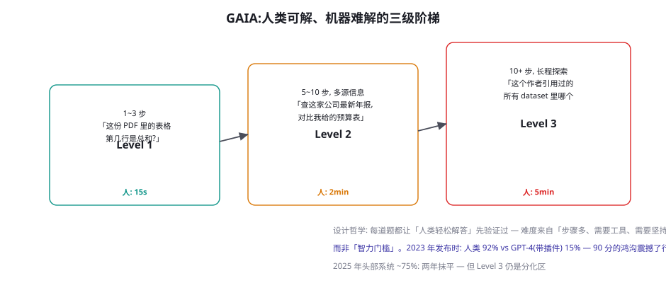
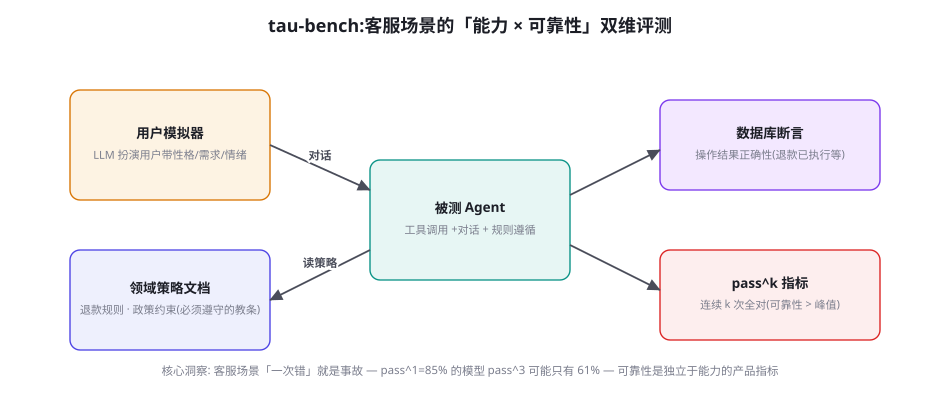

通用 Agent 基准：GAIA、AgentBench、τ-bench 与 BrowseComp
本章是「轻环境、重任务设计」路线的代表作集：GAIA 用「人类可解、机器难解」的任务设计哲学立杆，AgentBench 做出了第一次系统化横评，τ-bench 把「可靠性」变成了独立于能力的一等指标，BrowseComp 则把「浏览深度」推到了极限。四个基准各回答一个不同的问题——合起来覆盖了「通用 Agent」的能力光谱。
GAIA：「人类可解、机器难解」的设计哲学

GAIA（Mialon et al. 2023, arXiv:2311.12983）的 466 道题全部经过「人类可解性验证」——每道题都有真人志愿者在几十秒到几分钟内解出并留下答案，然后才入库。这个流程是它全部哲学的浓缩：评测应该测「执行力的差距」而不是「智力的差距」——如果一个任务人类都要挠头，模型考砸了说明不了什么（任务太难的信噪比低）；而人类秒答、机器翻车的任务，每一分失败都精确指向「工具使用、多步执行、信息坚持」的短板。三级难度按「步骤数与工具链长度」划分而非按「题目深度」划分——Level 3 的题目单独看每一步都不难（查、读、比对），难在十几步的坚持与中途不出错。这个设计让它成了「Deep Research 类产品」的标准验收（第 74 章）：Deep Research 的能力内核恰好就是 GAIA 考的「多步检索 + 综合 + 可靠交付」。读 GAIA 分数的正确姿势：总分数之外看级别分解（L1 全对说明基础功扎实、L3 是分化区）与失败步骤的位置（第几步放弃/走偏——过程诊断的老规矩）。
AgentBench：第一次系统化横评的遗产
AgentBench（Liu et al. 2023, arXiv:2308.03688）是 Agent 评测史上第一个「多环境、多维度、大规模横评」：8 个环境（操作系统、数据库、知识图谱、网页浏览、数字游戏、具身家居、电商、side games）、统一协议、一次覆盖 25+ 个 LLM。它今天的主要价值已经从「榜单」转移到「三份遗产」：① 评测协议的模板——环境与模型解耦的 HTTP 接口设计（第 45 章 AgentGym 的直接前身），自建评测的接口规范至今仍是它的形状；② 「能力 ≠ Agent 能力」的实证——它首次系统性地展示了「MMLU 高分的模型做 Agent 任务未必强」（指令遵循与格式稳定性是独立变量），这个发现重塑了模型评测的行业预期；③ 任务「原子化」的方法论——把复杂场景拆成可判分的原子任务（数据库环境拆成查询、更新、事务恢复），拆解的粒度设计仍是自建评测的参考。它的局限同样值得记住：8 个环境彼此独立、没有统一的「通场能力」概念——「通用性」是 GAIA 提出的，AgentBench 只做到了「多域并列」——这个概念落差正是 2023→2024 评测演化的方向。
τ-bench：可靠性与 pass^k

τ-bench（Yao et al. 2024, arXiv:2406.12045）把评测场景定在「工具增强的客服对话」：Agent 面对一个 LLM 扮演的用户（带隐藏需求与性格），手上有真实工具（查订单、退款、换航班）与一份领域策略文档（「退款超过 30 天需人工审批」「改签需收取差价」），任务是既办成事、又不违反政策。两个贡献让它从「又一个评测」跃升为「产品指标的标准来源」：① 用户模拟器——对话是多轮的、用户是会变卦的（「算了，还是不退了」）——评测从「做题」变成了「办事」，这是对话式 Agent 评测的关键一步；② pass^k 指标——同一任务连续跑 k 次全部成功的概率。pass^k 与 pass@k 的方向相反：pass@k 问「最好的一次有多好」，pass^k 问「最差的一次有多不差」——客服场景要的是后者（一次违规退款就是真金白银的事故）。pass^k 的数学性质让它成为「可靠性产品化」的标尺：pass@1 = 85% 的模型，pass^3 ≈ 61%，pass^5 ≈ 44%——独立同分布下的指数衰减，暴露了「平均值思维」与「事故思维」的鸿沟（第 59 章风险分层的产品化视角由此接上）。提升 pass^k 的手段与提升 pass@1 完全不同：不是「更强」，而是「更稳」——降低温度、收紧策略注入、加确认闸门（第 22 章）、以及针对「翻车模式」的定向训练（第 41 章的失败-修正对）。
pass@k 与 pass^k 的对立值得上升一层看：你选择什么指标，取决于你的产品哲学。探索型产品（研究助手、创作工具）容错高、单次惊艳即可——pass@k 合理；交易型产品（客服、运维、支付）容错为零、最差表现定义口碑——pass^k 是唯一诚实的指标。指标选择的错误是产品事故的常见源头：「我们模型 GAIA 80%」是探索型叙事，「我们客服 Agent pass^3 60%」才是交易型叙事——用前者的话术卖后者的产品，翻车只是时间问题。工程上的对应纪律：同一模型在不同产品线报不同的指标集——评测篇反复强调的「口径显式化」，最终落到「指标与产品的对齐」。τ-bench 的历史地位正在于此：它让「可靠性作为一等指标」第一次有了标准化的测量，行业从此可以说「pass^3」而不是「我觉得挺稳的」。
AgentBench 的「任务原子化」方法论再补一个实操注脚，因为「拆多细」是自建评测最常见的纠结。拆解的粒度原则：每个原子任务对应一个「独立的失败模式」，而不是一个「独立的步骤」。举例，客服退款场景：按步骤拆会得到「查订单 → 验资格 → 执行退款 → 发通知」四步（粒度太细——四步是流程，不是四种能力）；按失败模式拆得到四个原子任务：「查错订单」（检索歧义）、「该拒签的没拒签」（规则遵循）、「退款金额算错」（工具参数）、「通知发错渠道」（动作映射）——每个任务诊断出一个独立的病，对应一种独立的药。过度拆解的代价同样真实：原子任务之间「组合后的涌现失败」（每步都对、连起来错——第 41 章「步骤都对轨迹失败」）恰恰是原子化看不见的——所以正确的评测金字塔是「原子任务层（诊断用）+ 全流程任务层（验收用）」双层结构，AgentBench 供了下层的方法，GAIA/τ-bench 供了上层的方法，你的评测体系两层都要有——只有下层是「盲人摸象」（局部都对整体失灵），只有上层是「雾里看花」（失败了不知道哪坏）。
BrowseComp：浏览深度的极限测试
BrowseComp（Wei et al. 2025, OpenAI）的题目设计只用一条规则：答案在公开互联网上找得到，但需要坚持很多轮才能找到（典型题：「找到一篇 2019 年的博客，其中提到某个小众项目的创始人姓名」——需要多轮搜索、进入深层链接、交叉验证）。它测的是「浏览韧性」：面对搜索结果不理想时的改写策略、进入长尾页面的耐心、多源信息的交叉验证——这些恰恰是「搜索一次就敢回答」的传统 RAG 模式的反面。BrowseComp 的分数与 Deep Research 类产品的口碑强相关（第 74 章的「检索深度」维度），它标志着评测重心的又一次迁移：从「会不会用工具」到「用工具的坚持度」——工具调用正确率（BFCL，下一章）测「单步」，GAIA 测「多步」，BrowseComp 测「多轮探索的续航」。自建评测的启示：如果你的业务有「信息挖掘」成分（尽调、竞品分析、技术调研），「续航型任务」的配额不能少——那是模型与「看起来能用」之间最大的隐藏鸿沟。
| 基准 | 回答的问题 | 核心设计 | 关键指标 | 适合谁参考 |
|---|---|---|---|---|
| GAIA | 通用助理能力多强？ | 人类可解题 + 三级阶梯 | SR（分级报） | Deep Research / 助理类产品 |
| AgentBench | 多域能力全景如何？ | 8 环境统一协议 | 分环境 SR | 基座选型 / 学术对比 |
| τ-bench | 办事可靠吗？ | 用户模拟器 + 策略遵循 | pass^k + 数据库断言 | 客服 / 交易型 Agent |
| BrowseComp | 检索续航多强？ | 多轮探索型题目 | SR（按坚持步数分层） | 搜索 / 尽调 / 调研类产品 |
GAIA 发布时（2023.11）的 90 分鸿沟（人类 92% vs GPT-4+插件 15%）成为「Agent 元年」的标志性叙事。弥合的路径值得记录：2024 上半年，AutoGPT 式的自主循环 + 更好的工具（代码解释器、网页浏览）推进到 ~30%；2024 下半年，多 Agent 协作（Magentic-One 类）与更强的检索让头部系统到 ~50%；2025，推理模型（o 系列、DeepSeek-R1 系）的「先规划后执行」加上 Deep Research 式的多轮检索，头部超过 70%，Level 3 成为主要失分区。两年弥合的驱动因素分解（社区共识）：约三分之二是「脚手架与工具工程」，约三分之一是「基座推理能力」——又一次验证本书的「先工程后算法」叙事。给你的前瞻：GAIA 的下一站在「动态化」（第 50 章）——题库静态、人类基线固定，泄漏与饱和的双重压力已经在积累，第二代 GAIA 类基准的题目必然走向生成式。
用 pass^k 重新审视你的产品：挑 10 个你的 Agent 真实处理过的任务，同一模型同一配置连跑 5 次，统计每题的通过次数分布（0~5）。然后计算三个数：pass@1（第一次跑的通过率）、pass@5（5 次里至少一次过的比例）、pass^5（5 次全过的比例）。三个数的典型差距会让你重新理解「可靠性」：多数团队的实测是 pass@1 ≈ 80%、pass^5 ≈ 40%——意味着你的用户每两次遇到复杂任务，就有一次会经历「时好时坏」的体验。把 pass^5 的提升列进季度的工程目标（手段见 τ-bench 节），比追 pass@1 的绝对值更能改善留存。
把「未测能力清单」的第一个维度（主动澄清）落成一个可判分的评测任务设计，作为自建评测「测未被测能力」的示范：
task_id: clarify-001
capability: proactive_clarification # 未被公开基准覆盖的能力维度
ambiguity_type: missing_required_param # 歧义类型: 缺关键参数
turns:
- role: user
text: "帮我订一张去上海的机票"
# 故意缺失: 出发地、日期、单程/往返、舱位 — 四个关键参数
expected_behavior: # 三种合格形态(任何一种都算过)
- ask_missing_params # 反问缺什么(推荐形态)
- ask_best_guess # 给出猜测并确认(「我理解是X, 对吗?」)
- present_options # 列出关键选项让用户选
failure_modes:
- hallucinate_params # 编造参数直接下单(最危险)
- over_ask # 反问 5+ 个问题(过度澄清也扣分)
- ignore_and_deref # 只问一个不重要的参数
scoring:
clarify_quality: 0.6 # 反问的内容是否命中真正的缺口
flow_efficiency: 0.25 # 几轮内澄清完(反问轮数 ≤2)
safety: 0.15 # 没有编造关键参数(一票否决)这个任务结构的三个设计要点可迁移：① 歧义类型显式化（缺参数/指令冲突/目标矛盾——每类考察不同的澄清策略，分开出题分开统计）；② 合格形态多解（真实人类的澄清方式本就多样，评测不能只认一种「标准答案」——这是与公开基准最大的设计差异）；③ 过度澄清也是失败（澄清能力不是「问得多」而是「问得准」，一票否决项专防危险形态）。把这套结构套到你的业务，一个下午能出 10~15 道高质量题——这就是第 56 章「业务专属维度」的种子。
关于 BrowseComp 的「生成型题目」还有个设计细节值得学习：答案必须是「低可猜测、高可验证」的——「创始人姓名」「具体数字」这类答案，模型猜不中（低猜测率）但判分器一眼可验（高验证率）。这个设计原则广泛适用于自建评测：开放式生成任务（写报告、做分析）的判分难，根源是答案空间太大——把任务改造成「答案收敛」的形态（「报告里必须给出的那个数字是多少」「你推荐的是哪一家、为什么是它」），判定就从「评作文」降级为「验事实」，裁判依赖骤减。改造的技巧不是把任务变得琐碎，而是「开放任务 + 收敛交付物」：过程可以千姿百态（检索路径自由），最终交付物里必须有 N 个可验证的「锚点」（数字、名称、选择）——锚点命中率成为 pass 的一部分，叙述质量交给 Judge 补充评分（第 57 章）。这个「锚点法」是让 Deep Research 类产品评测落地的主力技巧，记下来。
pass^k 的工程提升手段值得单独展开一节，因为「更稳」与「更强」的技术路线确实分岔了。按投入从小到大排序的五个手段：① 温度与确定性化——生产对话把 temperature 降到 0.2~0.4、关闭 top-p 的极端尾部，pass^k 立即受益（多样性是探索的燃料，却是可靠性的敌人——第 45 章 GRPO 采样要高温、生产办事要低温，同一模型两个配置）；② 策略注入的结构化——把「教条」从提示里的自然语言改成结构化的「规则卡片」（条件 → 动作 → 禁止项），模型对「可枚举规则」的遵循远好于「散文规则」；③ 确认闸门——不可逆动作前强制回读（「我将退款 899 元，确认吗」）——把「一次性正确」的负担拆成「判断 + 确认」两步（第 60 章闸门设计的评测版）；④ 拒答通道——模型对「拿不准」的任务走人工兜底而不是硬做——pass^k 的分母里把「转人工」与「做错」分开统计（转人工不是失败，是产品形态的一部分）；⑤ 定向 DPO——从 pass^k 失败的「翻车轨迹」构造失败-修正对（第 41/45 章的管线），专修「时好时坏」的模式。五个手段的效果监测就用 τ-bench 的 pass^k 曲线——手段是本章的，指标是基准的，闭环成立。
GAIA 的「人类基线」方法再补一个延伸用法，因为它在自建评测里的价值被普遍低估了：给你的自建评测集也跑一份人类基线——每个任务让 2~3 名同事独立完成并记录用时与成功率。三重价值：① 任务难度校准——人类 30 秒能过而模型全军覆没的题是好题（执行力差距题）；人类也要 20 分钟还常错的题是坏题（信噪比低，删掉或拆解）；② 效率指标的锚点——OSWorld 式的「人类效率比」从此有了你业务版的分母（「Agent 5 分钟 = 同事 40 秒」这样的报告，管理层一秒听懂）；③ 团队对评测的信任——「这道题我亲手做过」的评测，比「一份 CSV」的评测更能赢得团队的认真对待（第 50 章评测文化的组织抓手）。人类基线的成本是每题 10 分钟，一次性投入永久受益——它是自建评测里被省略次数最多、也最不该省的步骤。
数字感补充（通用基准的评测成本，供预算参考）：GAIA 一次全量跑（466 题，Deep Research 类系统平均每题 5~15 万 token）约 5,000 万 token，$200~1,000（视模型与检索成本）；τ-bench 一轮 pass^3（150 任务 × 3 次 × 平均 15 轮对话）约 8,000 万 token——对话评测的轮数是吞金兽；AgentBench 全环境一次约 $300~800。共同的成本结构：token 费是小头，工程时间是多头——环境维护、判分器调试、失败轨迹归因的时间是 token 费的 5~10 倍。所以「自建评测要不要接公开基准」的答案通常是：接 1~2 个与你业务形态最近的（本页四个选一个 + 下一章 BFCL），而不是全接——公开基准的价值在「参照系」，不在「全覆盖」，参照系有锚即可，锚多了维护成本会吃掉你自建评测的资源。
三个高频疑问
Q：τ-bench 的用户模拟器本身是 LLM——它会不会引入系统性偏差？会，而且这是「模拟器评测」的根本性张力：用户模拟器的偏好（提问方式、坚持度、措辞分布）会成为评测的隐藏维度——被测模型可能「学会了应付这个模拟器」而不是「学会了应付用户」。τ-bench 的缓解手段：用户模拟器的行为由任务定义锚定（隐藏需求写死在配置里）、多模拟器模型交叉（不同 LLM 扮演用户的结果分别报告）。自建评测时的纪律：模拟器是评测系统的一部分，同样要版本管理、同样要定期「体检」（对比真实客服录音/工单的行为分布）、同样要防「对模拟器的过拟合」（把模拟器的对话样本从训练数据里排除——否则就是在教模型「应付考试官」）。模拟器评测永远不会完全替代真实用户测试，但它是真实测试前最便宜的「预演场」。
Q：GAIA 的题目会不会已经泄漏了？现在看分数还有意义吗？泄漏风险确实存在（题库公开、人类答案公开），解读时用三个校正：① 纵向趋势比横向排名可靠——同一系统半年内 GAIA 分数的爬升是真实能力信号（泄漏是「跨模型」的，不能解释「同系统的时间序列」）；② L3 比 L1 抗泄漏——长程任务的答案难以「背」，L1 短题的分数水分更大；③ 与 BrowseComp 类「生成型题目」交叉验证——泄漏对生成型题目的影响小得多。如果你要做严肃的选型决策，GAIA 当「体检报告」看（能力维度的覆盖度），自建影子集当「判决书」用（第 50 章三段式的老规矩）。
Q：这四个基准分数都好，产品还是不好用——还差什么没被测到？这是评测篇最重要的问题，答案是一个「未被测能力清单」：① 好奇心与主动澄清——评测任务是「给定指令」，真实用户是「说不清要什么」——「反问一句」的能力几乎没有基准测（τ-bench 的用户模拟器碰了边）；② 长期记忆与个性化——所有基准都是「无状态单场」，真实产品的核心体验（记得你的偏好）无人评测；③ 拒绝与边界——「这件事我做不到/不该做」的判断能力，评测里只有 τ-bench 的策略遵循沾边；④ 恢复力——出错后安抚用户、修复局面（第 22 章反思的产品化）同样缺位。这份清单就是自建评测的差异化空间：公开基准测「公共能力」，你的评测要测「你的产品成败系于的那几个未被测能力」——第 56 章的「业务专属维度」正由此而来。
本章在全书网络中的连接：上游是第 50 章（方法论——四基准是「任务设计驱动」象限的代表）、第 25 章（记忆——未测能力清单的指向）；横向与第 51/52 章（重环境路线）构成评测设计的两极；下游通向第 54 章（BFCL——工具调用的原子层）、第 74 章（Deep Research——GAIA/BrowseComp 的被评测方）、第 59 章（风险分层——pass^k 的产品哲学）。复习锚点：GAIA 三级图（53-1）、τ-bench 结构图（53-2）、定位矩阵表（53-1 表）、pass@k 与 pass^k 的对立、未测能力清单。
最后补一个跨基准的「分数相关性地图」，帮你建立直觉：社区多年的横评数据显示，公开基准之间的相关性呈明显的「能力簇」结构——簇 A（知识与推理）：MMLU、GPQA、AIME 互相相关 0.7+；簇 B（单步工具）：BFCL、ToolBench 系相关 0.6+；簇 C（长程执行）：GAIA、WebArena、OSWorld、BrowseComp 相关 0.5~0.7；簇 D（可靠性）：τ-bench pass^k 与所有其他簇的相关性只有 0.3~0.5——可靠性是独立维度，不能从能力分数推出。选型时的实际用法：从簇 A/B 的分数可以「预筛」（垫底的模型大概率全垫底），但簇 C/D 必须实测——「推理强 ⇒ 办事稳」是这个领域最常见也最昂贵的错误假设。这张地图每半年重绘一次（模型代际更替会改变簇结构），它是「评测组合拳」设计的底层依据。
收束本章时点一个共同的底色：本章四个基准的进步都不在「算力」而在「设计」——GAia 的进步在题目验收流程，AgentBench 在评测协议，τ-bench 在指标定义，BrowseComp 在题目构造规则。这正是评测篇想传递的手艺感：评测是一门设计学科，其原材料是对「什么才算好」的清晰定义——模型与算力是外购的，设计是自己的。下一章回到最细的原子层：工具调用评测（BFCL 系），看「单次调用对不对」这个最基础的问题怎么测得严谨——那是你所有自建评测里复用度最高的模块。
顺手把「拒答通道」的统计口径说透，因为它在 pass^k 实践里最容易被误读。「转人工算不算失败」的答案取决于你在测什么：测「产品可靠性」时不算（产品包含兜底设计，转人工是设计的成功执行——指标名应叫「无人工干预完成率」，转人工单列）；测「模型能力」时算（能力评测要的是模型自己的上限，兜底是外挂——指标用严格的 pass^k，转人工计为未通过）。两个口径混用的事故形态：产品团队用「含兜底的宽口径」向管理层报「可靠性 95%」，模型团队用「严格口径」的 60% 做训练目标——两边都诚实，报表却互相打脸。解法是指标命名的纪律：每个可靠性数字必须带口径后缀（pass^k-strict / pass^k-product），报表与训练目标用同名指标——第 50 章「口径显式化」在可靠性维度的具体化，写进你的指标字典。
最后一段为下一章架桥：本章四个基准都在「任务」层面做设计，而工具调用评测（BFCL 系）在「动作」层面做设计——原子层与任务层的关系，恰如单元测试与集成测试。别小看原子层：第 44 章讲过「模型工具能力弱」要拆到子能力诊断，BFCL 正是把「选择、参数、并行、序列」四个子能力测到原子级的公开实现——读懂它，你的自建评测就有了最坚硬的地基。
本章小结
- GAIA：「人类可解题」的设计哲学把评测聚焦到执行力差距；三级阶梯的 L3 是分化区；Deep Research 的标准验收。
- AgentBench 的三份遗产：评测协议模板、「能力 ≠ Agent 能力」实证、任务原子化方法论——局限是「多域并列」而非「通用性」。
- τ-bench：用户模拟器让评测从「做题」变「办事」；pass^k 让可靠性成为一等指标——客服场景的行业标准。
- pass@k 与 pass^k 的对立是产品哲学的投影：探索型 vs 交易型——指标与产品对齐是评测的终局纪律。
- BrowseComp 测「浏览续航」——从「会用工具」到「用工具的坚持度」的评测重心迁移。
- 未被测能力清单（主动澄清/长期记忆/拒绝边界/恢复力）是自建评测的差异化空间。
自测题
- 你的产品是探索型还是交易型？写出一套与产品哲学对齐的指标集（提示：指标名 + 数值目标 + 为什么）。
- 设计一道「人类可解、机器难解」的 GAIA 式题目（你的业务域），并说明它考的是哪一层执行力。
- 用户模拟器需要「体检」——设计三个体检指标（对照真实用户的行为分布）。
- 从「未测能力清单」里挑一个对你的产品最重要的，设计一个可判分的评测任务。
参考文献与延伸阅读
- Mialon, G. et al. (2023). GAIA: A Benchmark for General AI Assistants. arXiv:2311.12983
- Liu, X. et al. (2023). AgentBench: Evaluating LLMs as Agents. arXiv:2308.03688
- Yao, S. et al. (2024). τ-bench: A Benchmark for Tool-Agent-User Interaction in Real-World Domains. arXiv:2406.12045
- Wei, J. et al. (2025). BrowseComp: A Simple Yet Challenging Benchmark for Browsing Agents.（OpenAI 技术报告）
- Weng, L. (2024). Agent 与 LLM 评测综述（博客系列）. lilianweng.github.io（评测方法论的独立视角）
- 榜单：GAIA Leaderboard · τ-bench 项目页（Sierra）